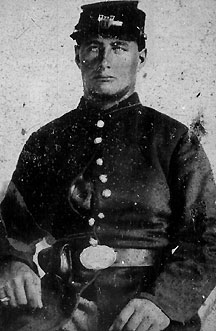

|

NAME: George Bunnell
BORN: 1839
DIED: 1904
ALLEGIANCE: Union
HIGHEST RANK: Artificer
UNIT: 1st New York Engineers, Company E
RECORD: Mustered in as a private on September 25, 1861, at
Newark, New Jersey. Promoted to artificer on July 1, 1862. Mustered
out on September 24, 1864, at Bermuda Hundred, Virginia.
|
|
Maybe George Bunnell of Newark, New Jersey, had a
particularly sturdy build and a firm belief in the
Protestant work ethic. Or maybe he was just in the right
place at the right time (or the wrong place at the wrong
time). But when he pledged his service to the Union cause,
it was with the army's Corps of Engineers. That meant he
would spend much of his military career digging ditches and
hauling logs and rocks to build bridges and roads, forts,
and earthworks.
Bunnell began his hardworking army years in September
1861, when he and his younger brother William enlisted as
privates in the 1st New York Engineers. The Bunnell brothers
were mustered in along with the rest of their regiment on
September 25 at Newark, New Jersey. Immediately the unit was
sent to Annapolis, Maryland, for training.
After they were deemed ready to ply their craft in the
field, the engineers headed to the coast of South Carolina.
There, the engineers had roles in several important Union
operations and battles in the area, including the capture of
Fort Pulaski, Georgia, in April 1862, and the Battle of
Secessionville, South Carolina, in June 1862. That July
George was promoted to artificer, a rank common among
experienced enlisted men in the engineers corps and one that
William would also hold. The following year, the Bunnells
and their fellow engineers participated in the storied siege
of Fort Wagner in July 1863. At Petersburg, Virginia, in
July 1864, they worked on the mine that was exploded to
start the Battle of the Crater.
In September, the 1st New York's three-year enlistments
expired, and the engineers were mustered out on the 24th at
Bermuda Hundred, Virginia. The regiment had lost 27 men
killed in battle and 161 killed by disease or work-related
injuries.
George Bunnell went on after the war to make a living as
a wheelwright. William tried carpentry briefly, but
disabilities acquired during his wartime engineering service
forced him to pursue a less physically demanding career as a
clerk. George, too, was eventually forced away from his
craft; by 1897, rheumatism had rendered him unable to work.
He died seven years later.
Source: Civil War Times Illustrated
38:2 (May 1999), 80.
|